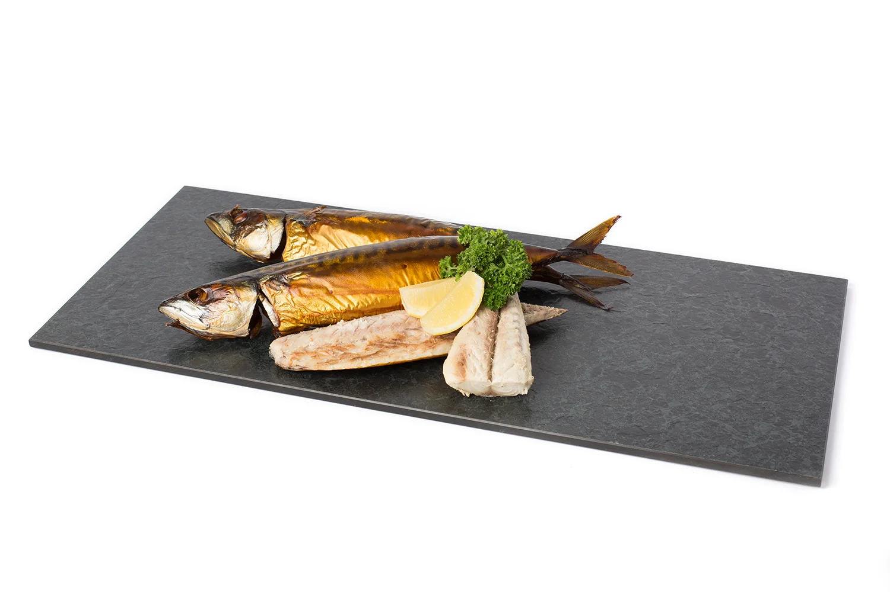
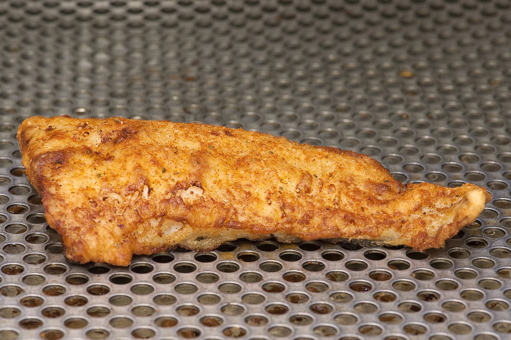
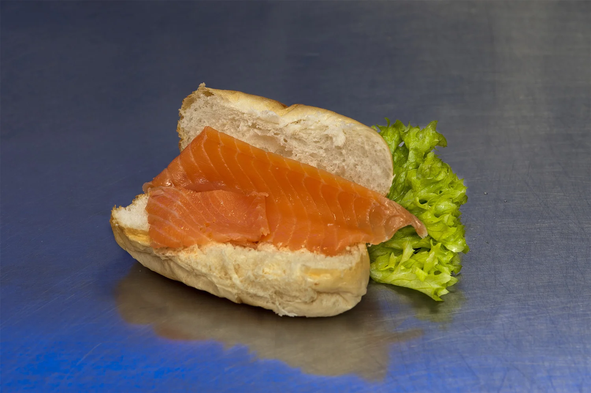
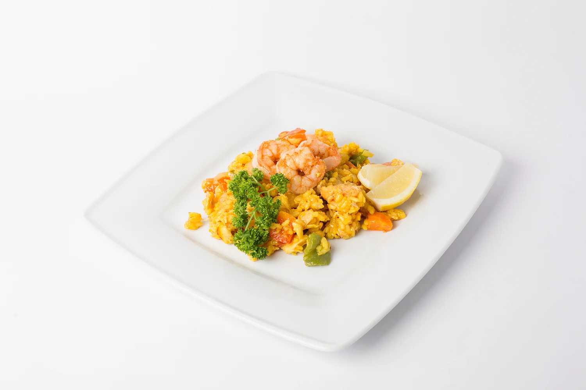

Wat wij verkopen
Acht categorieën dagverse, gerookte en kant-en-klare producten. Kies een categorie voor de volledige lijst met foto, omschrijving en prijs.

Verse vis
Dagelijks vers van de afslag in Scheveningen, iedere ochtend geselecteerd.
Bekijk categorie
Gerookte vis, garnalen en salades
Ambachtelijk gerookte vis, Hollandse garnalen en huisgemaakte salades.
Bekijk categorie
Gebakken vis
Lekkerbek, kibbeling en meer, vers gebakken terwijl u wacht.
Bekijk categorie
Broodjes vis
Onze specialiteiten vers bereid op een broodje.
Bekijk categorie
Haring
Zoute en zure haring, zelf gepekeld volgens oud familierecept.
Bekijk categorie
Kant en klare maaltijden
Uit eigen keuken, alleen nog opwarmen.
Bekijk categorie
Luxe visschotels
Ambachtelijk opgemaakte schotels voor borrel of maaltijd.
Bekijk categorie
Overige producten
Tonijnsashimi, zalmwraps en Zeeuwse streekproducten.
Bekijk categorieVis bestellen voor thuis of een feestje
Geef uw bestelling twee dagen van tevoren door, wij maken 'm voor u klaar om op te halen aan de Buitenwatersloot.